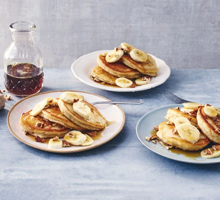

Banana Pancakes
Back to Main Page

Description
Turn overripe, blackened bananas into sweet and fluffy American-style
pancakes. Serve with syrup and crunchy, toasted pecan nuts as a delicious
brunch treat
Ingredients
- 350g self-raising flour
- 1 tsp baking powder
- 2 very ripe bananas
- 2 medium eggs
- 1 tsp vanilla extract
- 250ml whole milk
- butter, for frying
Steps
-
Sieve the flour, baking powder and a generous pinch of salt into a large
bowl. In a separate mixing bowl, mash the very ripe bananas with a fork
until smooth, then whisk in the eggs, vanilla extract and milk. Make a
well in the centre of the dry ingredients, tip in the wet ingredients
and swiftly whisk together to create a smooth, silky batter.
-
Heat a little knob of butter in a large non-stick pan over a medium
heat. Add 2-3 tbsp of the batter to the pan and cook for several
minutes, or until small bubbles start appearing on the surface. Flip the
pancake over and cook for 1-2 mins on the other side. Repeat with the
remaining batter, keeping the pancakes warm in a low oven.
-
Stack the pancakes on plates and top with the banana slices, a glug of
sticky maple syrup and a handful of pecan nuts, if you like.